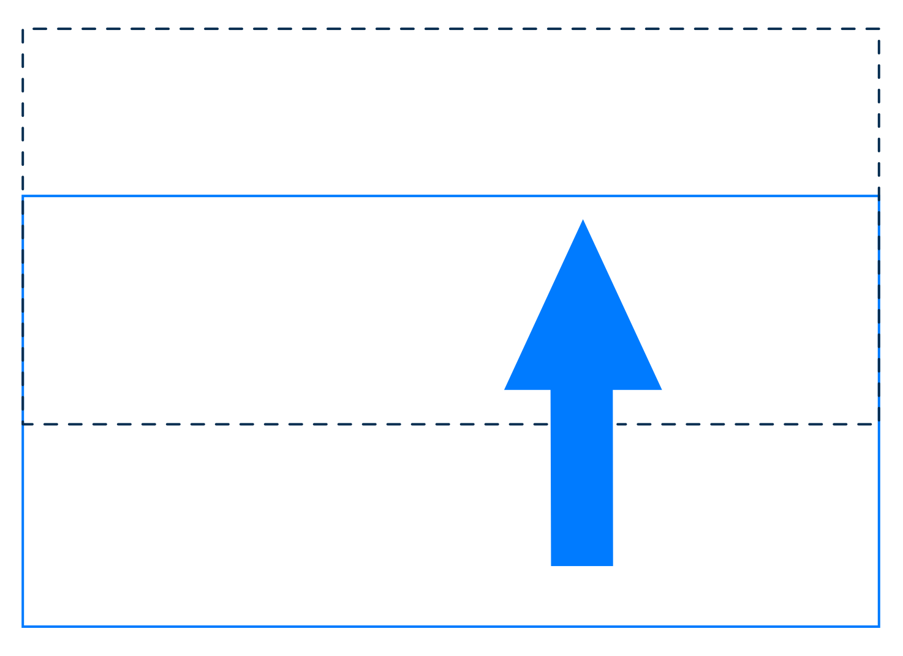
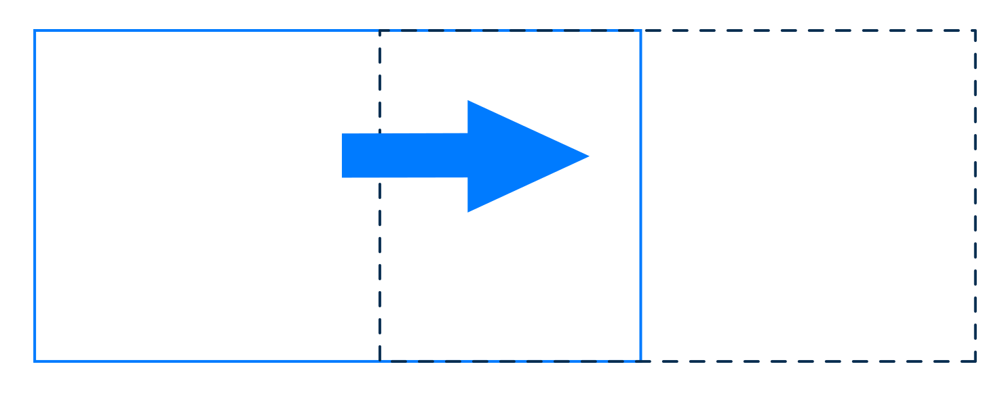
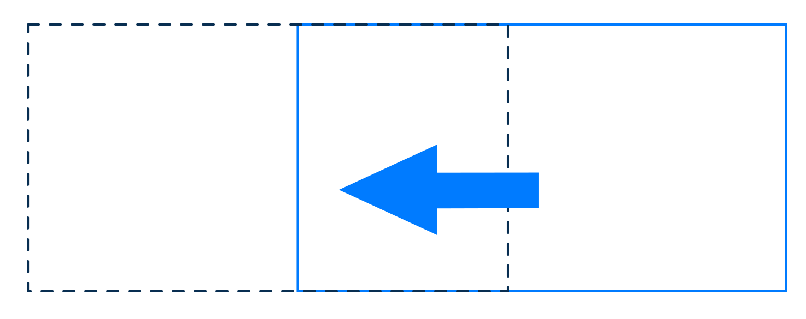
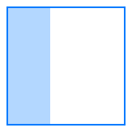
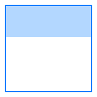
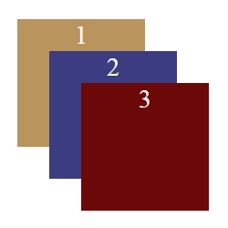

Box model

Лекция №7.1
Поток — одно из важнейших базовых понятий в вёрстке. Это принцип организации элементов на странице при отсутствии стилей.
Если мы просто напишем HTML из нескольких тегов и не напишем CSS, то отображение в браузере будет предсказуемо благодаря тому, что мы абсолютно точно знаем, как браузер располагает элементы в потоке.
Даже если к странице не подключено никаких стилей, к каждому элементу всё равно будут применяться CSS-правила, «зашитые» в движке браузера.
На основании этих правил условно все элементы на странице можно разделить на две категории: блочные (block) и строчные (inline).
Правила расположения строчных и блочных элементов в нормальном потоке называются контекстом форматирования.
Блочные элементы участвуют в формировании блочного контекста форматирования. Строчные элементы формируют строчный контекст форматирования.
Азимут решает метеорный дождь. Движение однократно.
Зоркость наблюдателя гасит аргумент перигелия.
Очевидно, что азимут меняет возмущающий фактор.
Ширина и высота строчного элемента равна ширине и высоте содержимого. В отличие от блочного элемента, мы не можем управлять шириной и высотой строчного элемента через CSS.
Начало координат расточительно притягивает комплексный критерий сходимости Коши.
.png)
Внутренняя область элемента (content area) содержит текст и другие элементы, расположенные внутри (контент или содержимое).
У неё часто бывает фон, цвет или изображение; её размеры называются ширина контента (content width или content-box width), и высота контента (content height или content-box height).
Свойство padding (с английского набивочный материал)— или внутренний отступ — позволяет оттолкнуть контент от границ родительского элемента.
Можно управлять отступами по отдельности при помощи свойств padding-top, padding-left, padding-right, padding-bottom.
<div class="parent">
<p class="content">Сублимация...</p>
</div>
.parent {
border: 1px solid #666; /* Границы родительского элемента */
}
Предполагается, что поля в книгах нужны для защиты информации. Когда книги начали писать на пергаменте, возникла угроза - мыши. Поскольку пергамент изготавливался из натуральной кожи, грызуны вполне могли съесть всю книгу целиком. Но начинали они всегда с краев, а значит, был шанс успеть спасти информацию.
.parent {
border: 1px solid #666;
/* Отступ по 10 пикселей со всех четырёх сторон. */
padding: 10px;
}
Предполагается, что поля в книгах нужны для защиты информации. Когда книги начали писать на пергаменте, возникла угроза - мыши. Поскольку пергамент изготавливался из натуральной кожи, грызуны вполне могли съесть всю книгу целиком. Но начинали они всегда с краев, а значит, был шанс успеть спасти информацию.
Свойство margin задаёт размер внешнего отступа вокруг элемента.
Чтобы сделать отступ только с одной стороны, следует использовать margin-top (сверху), margin-right (справа), margin-bottom (снизу) или margin-left (слева).
/* Применяется ко всем четырём сторонам */
margin: 1em;
margin: -3px;
/* сверху и снизу | слева и справа */
margin: 5% auto;
/* сверху | слева и справа | снизу */
margin: 1em auto 2em;
/* сверху | справа | снизу | слева */
margin: 2px 1em 0 auto;
/* Общие значения */
margin: inherit;
margin: initial;
margin: unset;
Свойство border отвечает за отрисовку видимой границы блока. Часто видимую границу блока называют рамкой.
Само свойство border является шорткатом и объединяет в себе значение для нескольких полных свойств:
border: [border-width] [border-style] [border-color];
<div class="element">
<p>Повседневная практика показывает, ...</p>
</div>
.element {
/* рамка толщиной 5 пикселей, пунктир, цвет #ED674*/
border: 5px dashed #ed6742;
}
Предполагается, что поля в книгах нужны для защиты информации. Когда книги начали писать на пергаменте, возникла угроза - мыши. Поскольку пергамент изготавливался из натуральной кожи, грызуны вполне могли съесть всю книгу целиком. Но начинали они всегда с краев, а значит, был шанс успеть спасти информацию.
element {
position: absolute;
}
Позиция элемента может устанавливаться относительно границ области просмотра.
element {
position: absolute;
}
Позицию элемента также можно установить, используя границы родительского элемента.

element {
position: relative;
}
Вот четыре блока с относительным позиционированием.
Сдвинем блоки с четными цифрами немного влево, а блоки с нечетными – вправо.
.third-element {
position: relative;
bottom: 20px;
}
Давайте немного переместим третий блок.
<header class="header">
<h2>Kitty</h2>
</header>
<div class="content">
<img src="image_dfdvcix.jpeg" alt="">
<img src="image_dsfsvcv.jpeg" alt="">
<img src="image_ioeriou.jpeg" alt="">
</div>
.header {
background-color: rgba(255, 255, 255, .8);
text-align: center;
text-transform: uppercase;
position: fixed;
width: 250px;
}
<div class="parent">
<div class="sticky">1</div>
<div class="sticky">2</div>
<div class="sticky">3</div>
<div class="sticky">4</div>
</div>
.sticky {
position: sticky;
top: 10px;
width: 50px;
height: 50px;
margin-bottom: 150px;
background-color: rgb(255, 255, 255);
}

div {
position: relative;
top: 10px;
}

p {
position: relative;
bottom: 5px;
}

div {
position: relative;
left: -25px;
}

div {
position: relative;
right: -2%;
}

.parent {
position: relative;
}
.child {
position: absolute;
width: 50px;
background-color: rgb(250, 135, 135);
top: 0;
bottom: 0;
}

.child {
position: absolute;
height: 50px;
background-color: rgb(250, 135, 135);
left: 0;
right: 0;
}

/* Значение по умолчанию */
z-index: auto;
/* Числа */
z-index: 5;
z-index: 0;
z-index: -2;
<body>
<div class="container">
<div class="box box1">1</div>
<div class="box box2">2</div>
<div class="box box3">3</div>
</div>
</body>
.box {
position: absolute;
height: 80px;
width: 80px;
}
Изначально порядок слоев соотносится с порядком расположения элементов в DOM.

.box2 {
background-color: rgb(60, 60, 129);
margin: 20px;
z-index: 1;
}
Так как z-index второго элемента больше, он находится выше в стопке слоев.
.box1 {
background-color: rgb(186, 148, 93);
/* можно использовать любое значение больше единицы */
z-index: 2;
}
Элементы выстроились по убыванию значения свойства z-index.
float обычно используется, когда мы хотим, чтобы блок текста обтекал изображение.
<div class="main-container">
<img src="https://kinzhal.media/..." alt="Goose">
<p>В мире много статей...</p>
</div>
В мире много статей о пользе прогулок, правильного питания, сна и личностного роста. Но мало статей о пользе гусей. Пора это исправить.
img {
float: left;
Или так:
float: right;
}
В мире много статей о пользе прогулок, правильного питания, сна и личностного роста. Но мало статей о пользе гусей. Пора это исправить.
В отличие от уток, которые живут в любом парке, для поглажки гуся необходимо выехать за город. Если вас волнует создаваемый при этом углеродный след, можете воспользоваться велосипедами.
Наибольшее скопление пригодных к поглажке гусей будет в местах, не охваченных связью 4G. Лента Инстаграма и рабочая переписка не сможет достать вас там, где вы будете гладить или дразнить гусей.
В мире много статей о пользе прогулок, правильного питания, сна и личностного роста. Но мало статей о пользе гусей. Пора это исправить.
В отличие от уток, которые живут в любом парке, для поглажки гуся необходимо выехать за город. Если вас волнует создаваемый при этом углеродный след, можете воспользоваться велосипедами.
Наибольшее скопление пригодных к поглажке гусей будет в местах, не охваченных связью 4G. Лента Инстаграма и рабочая переписка не сможет достать вас там, где вы будете гладить или дразнить гусей.
Придадим всем элементам внутри контейнера свойство float:
img, p {
float: left;
}
В мире много статей о пользе прогулок, правильного питания, сна и личностного роста. Но мало статей о пользе гусей. Пора это исправить.